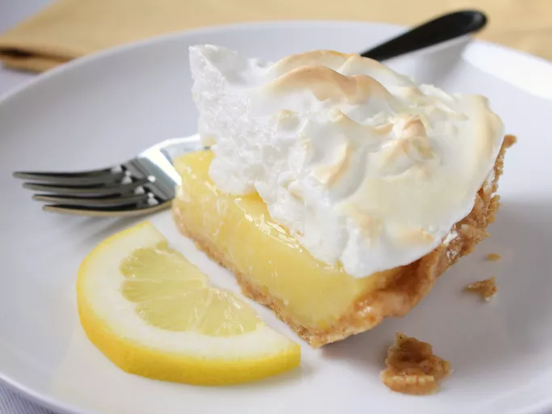

Home
Lemon Pie

Description
Lemon pie is a refreshing, tangy dessert featuring a smooth and creamy lemon filling encased
in a flaky pastry or buttery graham cracker crust. Often topped with meringue or whipped
cream, it balances sweet and tart flavors for a bright, zesty treat.
Popular variations include lemon meringue pie, which has a light, airy topping, and lemon tart,
which offers a denser, more intense citrus flavor. Loved for its vibrant taste and silky
texture, lemon pie is a classic dessert perfect for any occasion.
Ingredients
- 1 cup white sugar
- 2 tablespoons all-purpose flour
- 3 tablespoons cornstarch
- ¼ teaspoon salt
- 1 ½ cups water
- 2 lemons, juiced and zested
- 2 tablespoons butter
- 4 egg yolks, beaten
- 1 (9 inch) pie crust, baked
- 4 egg whites
- ½ cup white sugar
Steps
- Preheat the oven to 325°F (162°C).
-
Make the lemon filling: Whisk sugar, flour, cornstarch, and salt in a saucepan, then stir
in water, lemon juice, and zest. Cook over medium-high heat, stirring, until it boils.
Add butter and mix until melted.
-
Temper the egg yolks: Gradually whisk ½ cup hot mixture into beaten yolks, then return
to the saucepan and cook until thick. Pour into a pre-baked crust.
-
Make the meringue: Beat egg whites until foamy, gradually adding sugar until stiff peaks form.
-
Assemble and bake: Spread meringue over filling, sealing edges, then bake for 20-25 minutes until golden brown.
- Cool and serve: Let cool for 1 hour, refrigerate for 4 hours, then slice and enjoy!